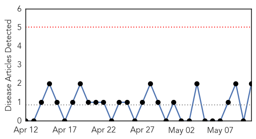
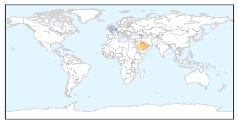
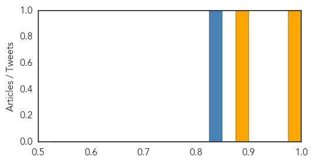
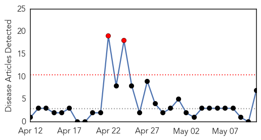

MERS
30-Day Web Trend
0 alerts, 0 warnings

30-Day Twitter Trend
0 alerts, 0 warnings

Article Locations
Article Confidences
Top Articles:
Top Tweets:
- 0.841
- MERS = Often Severe Acute Respiratory Syndrome Caused By a Coronavirus But Not SARS Coronavirus (OSARSCBCBNSC)? Catchy!
- 0.651
- AFD Blog `Saudi MOH: 9 New MERS Cases' MERS-CoV http://t.co/5Vz4MJHULS
- 0.605
- RT: AFD Blog `Saudi MOH: 9 New MERS Cases' MERS-CoV http://t.co/5Vz4MJHULS
Meningitis
30-Day Web Trend
2 alerts, 0 warnings

30-Day Twitter Trend
1 alerts, 0 warnings

Article Locations

Article Confidences

Top Articles:
- 0.996
- Meningitis in Niger: 100 people hospitalised in critical condition every day in Niamey
- 0.995
- Niger: Meningitis epidemic leaves 100 people in critical condition every day
- 0.995
- Meningitis in Niger: 100 people hospitalised in critical condition every day in Niamey / MSF steps up its activities to tackle the epidemic
- 0.994
- 100 people hospitalised in critical condition every day in Niamey
- 0.994
- Meningitis in Niger: 100 people hospitalised in critical condition every day in Niamey / MSF steps up its activities to tackle the epidemic
- 0.986
- Northwest Suburban High School Student Confirmed to Have Meningitis
- 0.591
- Bills to Tighten Maine's Vaccination Exemption Rules Meet Resistance
Top Tweets:
-
No tweets found for May 11, 2015